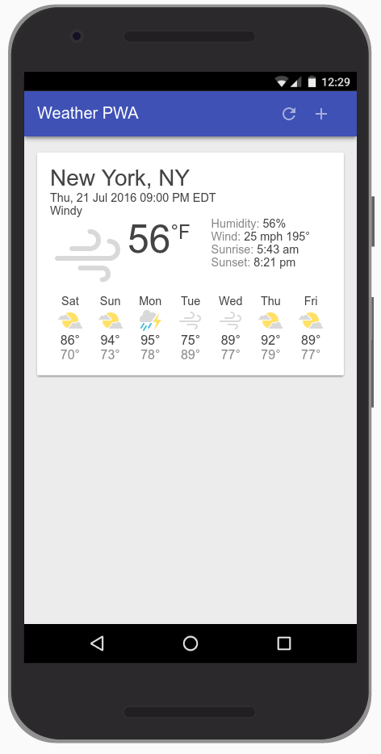

Introduction
Progressive Web Apps are experiences that combine the best of the web and the best of apps. They are useful to users from the very first visit in a browser tab, no install required. As the user progressively builds a relationship with the app over time, it becomes more and more powerful. It loads quickly, even on flaky networks, sends relevant push notifications, has an icon on the home screen, and loads as a top-level, full screen experience.
What is a Progressive Web App?
A Progressive Web App is:
- Progressive - Works for every user, regardless of browser choice because it's built with progressive enhancement as a core tenet.
- Responsive - Fits any form factor: desktop, mobile, tablet, or whatever is next.
- Connectivity independent - Enhanced with service workers to work offline or on low-quality networks.
- App-like - Feels like an app, because the app shell model separates the application functionality from applicationcontent .
- Fresh - Always up-to-date thanks to the service worker update process.
- Safe - Served via HTTPS to prevent snooping and to ensure content hasn't been tampered with.
- Discoverable - Is identifiable as an "application" thanks to W3C manifest and service worker registration scope, allowing search engines to find it.
- Re-engageable - Makes re-engagement easy through features like push notifications.
- Installable - Allows users to add apps they find most useful to their home screen without the hassle of an app store.
- Linkable - Easily share the application via URL, does not require complex installation.
This codelab will walk you through creating your own Progressive Web App, including the design considerations, as well as implementation details, to ensure that your app meets the above key principles of a Progressive Web App.